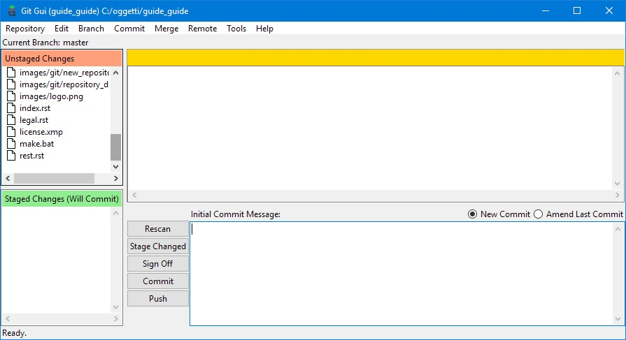
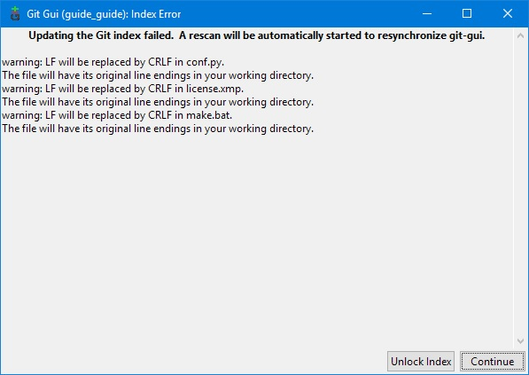

3. Gestire modifiche e versioni¶
Uno dei vantaggi di gestire la documentazione con dei file di testo e non con formati proprietari come quelli dei word-processor (Word, Libre Office Writer...) è che si possono gestire con degli strumenti di versioning che permettono di tenere traccia di tutte le modifiche anche se effettuate da persone diverse.
Questi strumenti, nati per i sorgenti dei programmi per computer, possono essere utilizzati in tanti altri campi: anni fa scrissi una guida su come utilizzarli per creare contenuti per un simulatore ferroviario in cui gran parte dei files erano testo.
Possono essere utilizzati anche con files binari, ma perdono alcune funzioni applicabili solo ai testi.
Utilizzeremo Git che ci facilita l’integrazione con un sito per la condivisione
e la pubblicazione dei
nostri lavori come vedremo nel prossimo capitolo .
3.1. Installare Git¶
L’installer del programma per Windows può essere scaricato dal sito di Git
L’installer propone diversi pannelli con delle opzioni: per l’uso normale quelle di default vanno benissimo.
3.2. Creare un repository¶
Il repository è una struttura di file (gestita da Git) dove vengono archiviate tutte le modifiche ai file.
3.2.1. Il file .gitignore¶
Per impostazione predefinita vengono inclusi nel repository tutti i files e le sottocartelle della directory che vogliamo gestire.
Abbiamo visto nel capito precedente che viene creata una cartella _build nella quale sono salvati i
risultati delle elaborazioni e che non ci interessa includere nel repository. Per gestire queste eccezioni
si può creare un file .gitignore che contenga la lista dei file e cartelle da escludere.
Questo è il file presente in questo progetto:
# exclude build dir
_build/
3.2.2. Attivare il repository¶
Clicchiamo con il tasto destro del mouse sulla cartella contenente il nostro progetto e dal menù
che appare selezioniamo Git GUI here
Dalla finestra riportata sopra selezioniamo Create New Repository
Indichiamo la cartella del nostro progetto (possiamo anche selezionarla con il pulsante Browse)
e quindi clicchiamo su Create.
3.2.3. Il primo commit¶
Il sistema ci presenterà questa nuova formati
nella quale elencherà i files presenti nella nostra cartella permettendoci di inserirli nel repository.
Avendo già impostato le esclusioni possiamo inserirli tutti cliccando sul pulsante Stage changed.
I files passeranno nel box sotto:
Per completare l’operazione di inserimento descriviamo i cambiamenti fatti nel box in basso a destra; essendo questo il primo commit scriviamolo come nell’esempio.
Non ci resta che premere il pulsante Commit ed il gioco è fatto.
Molto probabilmente vi apparirà questa segnalazione:
che possiamo tranquillamente ignorare cliccando su Continue (è dovuta alla diversa gestione del
fine riga tra le macchine Windows e Unix: Git utilizza il metodo di quest’ultimo e ci segnala che
effettua una conversione per noi totalmente ininfluente)